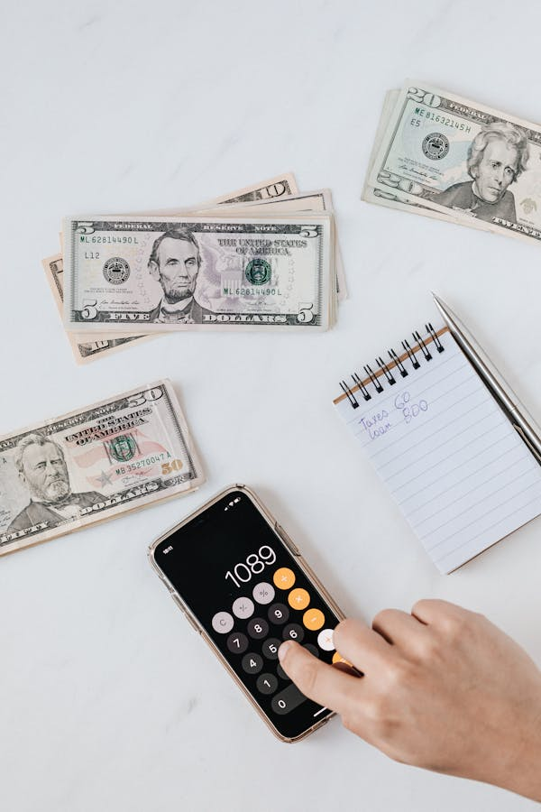

Side Hustles & Extra Income: What, Why & How to Boost Your Earnings
Published: May 2025 "Don’t rely on one income. Make extra money to create security." — Warren Buffett
In today’s economy, a single paycheck often isn’t enough. Whether you want to pay off debt, save for a dream vacation, or build financial freedom, a side hustle can help. This guide covers what side hustles are, why they matter, and how to start one—even with limited time.
What Is a Side Hustle?
A side hustle is any work you do outside your main job to earn extra income. Unlike a part-time job, side hustles are often:
- ✔ Flexible (work when you want)
- ✔ Scalable (grow as much as you choose)
- ✔ Passion-driven (turn skills/hobbies into cash)
"A side hustle is more than extra money—it’s optionality." — Chris Guillebeau
Why Start a Side Hustle?
1. Financial Security
- Cover unexpected expenses without debt
- Save for big goals (home, travel, retirement)
"Extra income is the best insurance policy."
2. Escape the Paycheck-to-Paycheck Cycle
- Break free from living on the edge
- Build savings and investments
3. Test New Career Paths
- Explore passions without quitting your job
- Transition to full-time self-employment
"Your side hustle today could be your empire tomorrow." — Unknown
How to Start a Side Hustle (Step-by-Step)
1. Assess Your Skills & Time
- What are you good at? (Writing, design, tutoring)
- How many hours/week can you commit? (Even 5 helps!)
"Start where you are. Use what you have. Do what you can." — Arthur Ashe
2. Choose the Right Hustle
Low-Time Options- Freelancing (Upwork, Fiverr) – Writing, graphic design, coding
- Gig Work (DoorDash, Uber) – Earn while driving
- Selling Online (Etsy, eBay) – Crafts, vintage items, printables
- Blogging/Affiliate Marketing – Earn from ads & recommendations
- YouTube/TikTok – Monetize content over time
- Online Courses – Teach a skill (Udemy, Teachable)
"The richest people in the world look for and build networks. Everyone else looks for work." — Robert Kiyosaki
3. Set Up for Success
- Open a separate bank account (Track earnings easily)
- Create a schedule (Consistency = growth)
- Automate tasks (Use tools like Canva, ChatGPT)
4. Scale Your Earnings
- Reinvest profits (Better equipment, ads)
- Outsource tasks (Virtual assistants)
- Diversify income streams (Add coaching, ebooks)
"Income rarely exceeds personal development." — Jim Rohn
Top Side Hustle Ideas (2024 Trends)
- 💰 AI Services – Prompt engineering, chatbot creation
- 💰 Reselling Thrift Finds – Flip furniture, sneakers, books
- 💰 Remote Assistance – Social media management, email handling
- 💰 Pet Sitting/Dog Walking – Rover, Wag
"Opportunities don’t happen. You create them." — Chris Grosser
Avoid These Side Hustle Mistakes
- 🚫 Spending before earning (Don’t over-invest upfront)
- 🚫 Ignoring taxes (Set aside 25-30% for IRS)
- 🚫 Quitting too soon (Most hustles take 3-6 months to grow)
"Success is the sum of small efforts repeated daily." — Robert Collier
Final Thought: Just Start
You don’t need a perfect plan—just action. Your first $100 will prove it’s possible.
"The only limit to your earnings is your imagination and hustle."
What’s your ideal side hustle? Share below!
Want a free Side Hustle Launch Checklist? [Download here]!